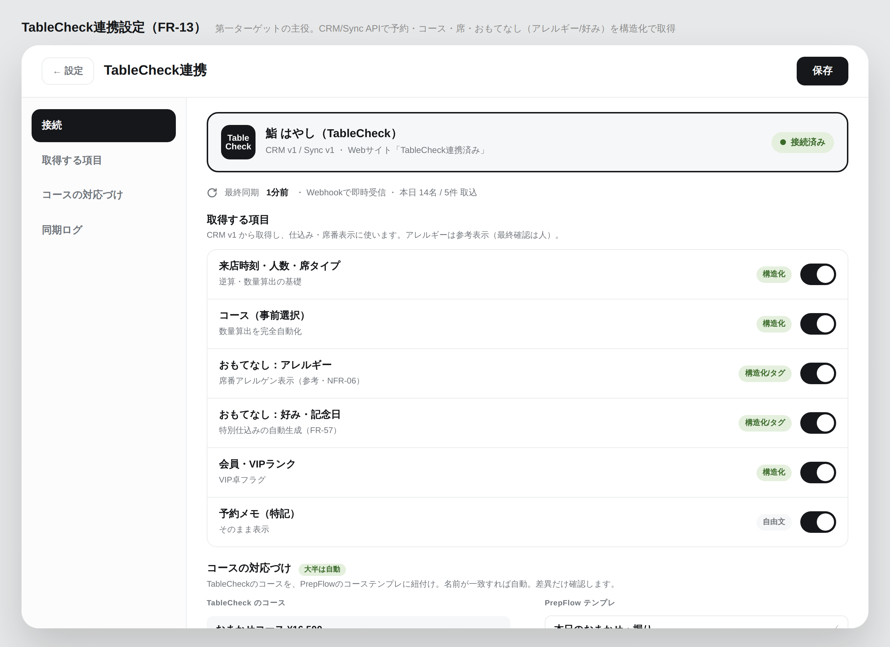
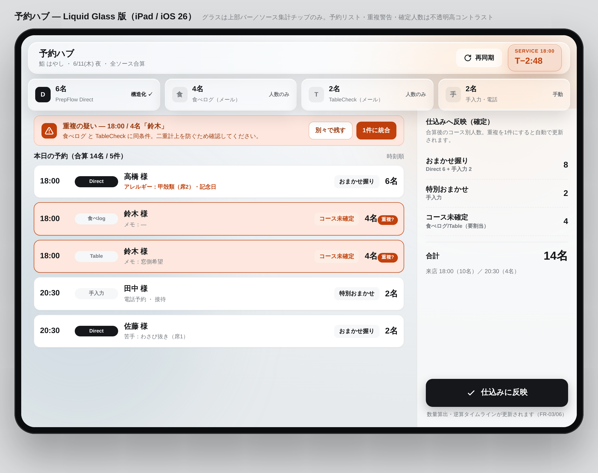
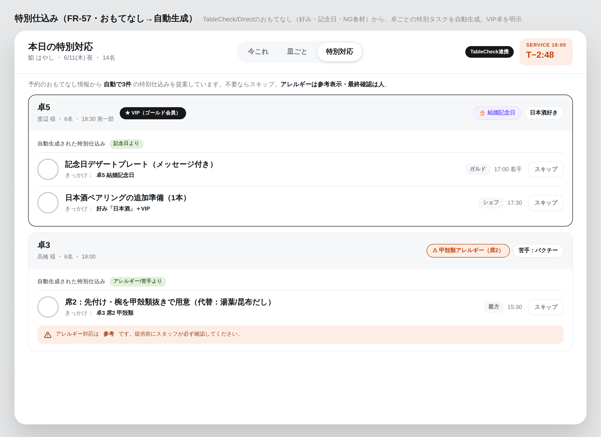
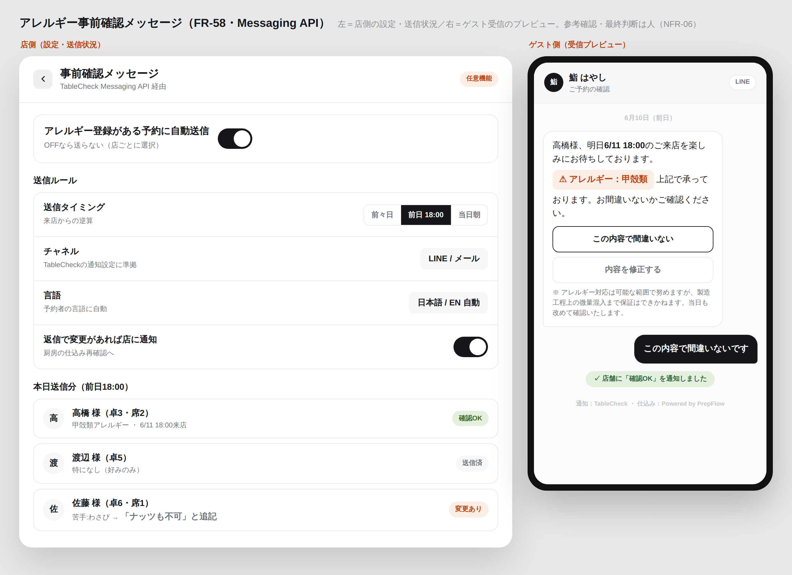
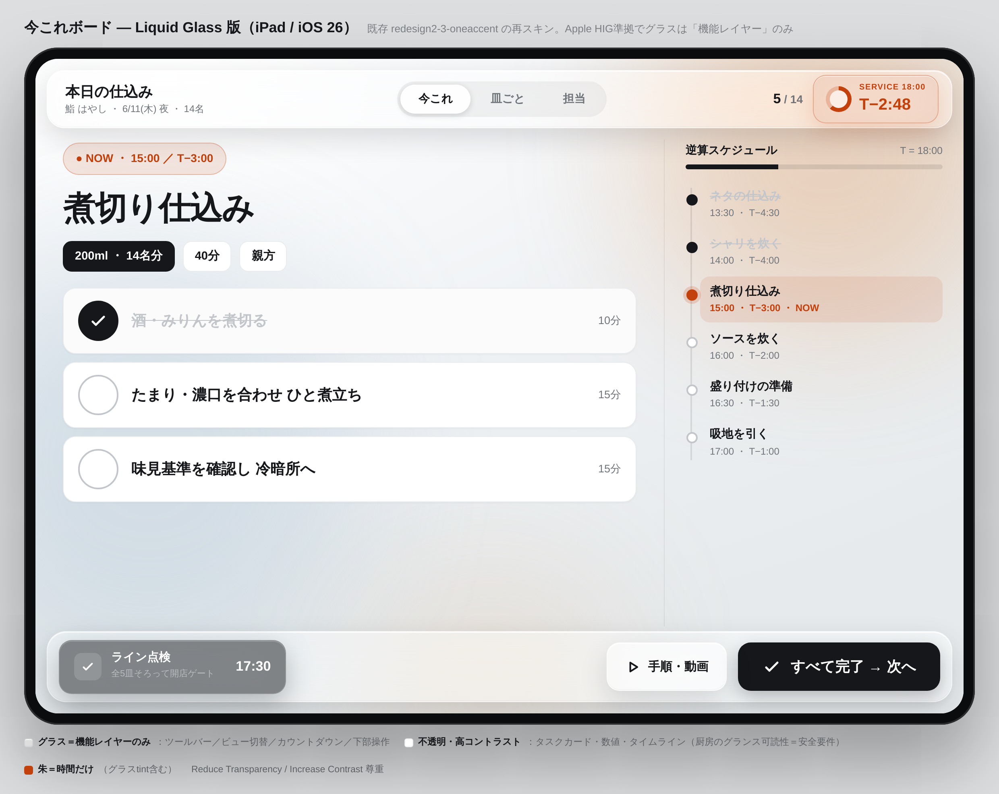
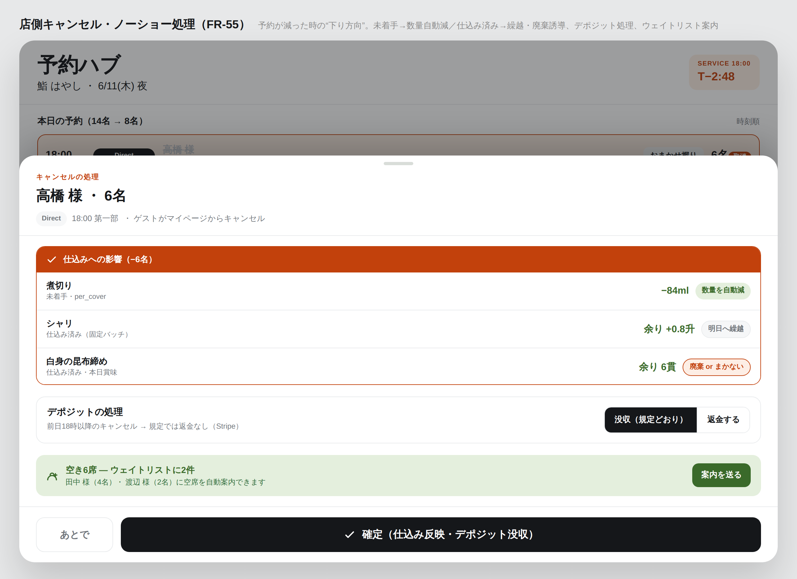

PrepFlow — 縦ぎりスライス② 予約連携TableCheck深掘り（主役）と Direct（二次）の2本の通し動線。どちらも予約ハブ→Engine→日次スライスBへ合流
取得チャネルは2つでも、正規化された Reservation を 1つの仕込みエンジンに流すのは同じ。各矢印は画面間で渡るデータ。予約は台帳でなくハブ（席割り・顧客DBは持たない）。
CTableCheck連携スライスCRM/Messaging API で構造化取得 → おもてなしを仕込みに活かす（FR-13/57/58）第一ターゲットの主役 ・ 申請P0

1TableCheck連携設定
CRM/Messaging API 接続
コンポーネント別審査→接続。Sync v1 Webhook→pullで即時同期。コースも構造化で取得。
FR-13 ・ 構造化: 日時/人数/コース/席/おもてなし/VIP
構造化予約
＋おもてなし
＋おもてなし

2予約ハブ
構造化✓で合算・正規化
複数ソースを正規化。TableCheckは「構造化✓」表示。重複警告。台帳業務はしない。
FR-34 ・ 席別アレルギー/好み/記念日/VIP
好み・記念日
NG食材・VIP
NG食材・VIP

3特別仕込み（自動生成）
おもてなし→特別タスク
記念日デザート・NG抜き対応・VIP卓フラグを自動生成。不要ならスキップ。
FR-57 ・ 卓ごとの特別仕込みタスク
登録アレルギー
（来店前）
（来店前）

4事前確認メッセージ
来店前にアレルギー確認
Messaging APIで「甲殻類で承っています、お間違いないか」を自動送信。返信で店に通知。
FR-58 ・ 確認OK/変更 → 厨房再確認
席別の
注意（参考）
注意（参考）

5当日ボード＋席別表示
キッチンに席別アレルゲン
席番チップ／注意ラベルで全員に伝達。参考表示・最終確認は人（NFR-06）。
FR-26/47 ・ → 日次スライスB へ
DDirectスライス自社直販の予約ページ → 構造化で取得 → キャンセル耐性（FR-35/36/55/56）二次施策 ・ 対 食べログ/ぐるなび手数料ゼロ＋自社導線

1Direct設定（店舗側）
枠・コース・デポジット
営業日×スロットの直販割当、コース公開、事前決済（必須/任意/なし）を設定。
FR-36 ・ 公開アロットメント枠
公開枠
（空き）
（空き）

2Direct予約ページ（ゲスト）
コース選択・アレルギー・決済
スロット→人数→コース事前選択（必須）→席別アレルギー→事前決済/デポジット。
FR-35 ・ 全て構造化された予約
確定
＋リマインド
＋リマインド

3確定メール＋マイページ
リマインド・変更・取消
ゲスト側で確認/変更/キャンセル（英語対応）。no-show削減のリマインド。
FR-35+ ・ 確定covers（構造化）
構造化covers
手数料ゼロ
手数料ゼロ
4予約ハブ
Direct＝構造化✓で合算
TableCheck等と同じハブに合流。Directの価値＝送客手数料ゼロ＋自社ブランド導線。
FR-34 ・ 確定covers → 仕込み
減った/消えた
差分
差分

5キャンセル耐性
ノーショー＋ウェイトリスト
減算→繰越/廃棄誘導・デポジット処理。満枠時の空き待ちをキャンセルで自動案内。
FR-55/56 ・ 仕込み差分 → 繰越/廃棄
合流：2つのチャネル → 1つのハブ → 1つのEngine取得元が違っても、正規化Reservationを同じ純関数に流す＝二重開発を避ける
TableCheck CRM/Messaging構造化・主役・申請P0（FR-13）
PrepFlow Direct構造化・二次・自社導線（FR-35）
予約ハブ（正規化）合算・重複警告・差分検知（FR-34）／台帳は持たない
Engine：diffPlan / calcQty / schedule追い仕込み・数量・逆算（純Swift）
→ 日次スライスB仕込みボード・着地予測・締め
戦略：TableCheck自体が席数連動の月額＝送客手数料ゼロ。よってDirectの手数料優位は対 食べログ/ぐるなび限定。TableCheck層では深掘り連携(C)が主役、Directは「ポータル依存を減らしたい/良い台帳が無い店」向けの二次。
やらない：キッチン→空席の書き戻し閉ループ／席割り・顧客DB・口コミ集客。アレルゲンは参考・人が確定（NFR-06）。